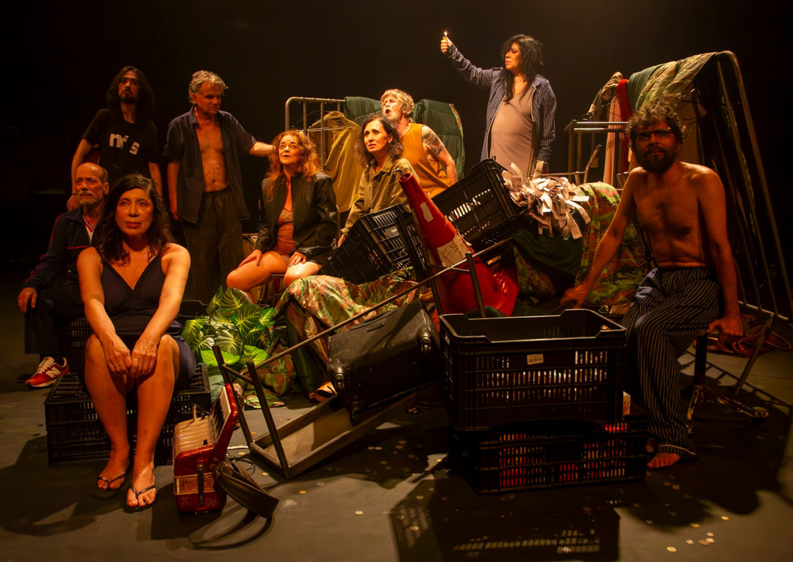

Grupo Galpão leva “(Um) Ensaio sobre a Cegueira” ao Sesc 24 de Maio em novembro

Adaptação do romance de José Saramago, com direção de Rodrigo Portella, propõe experiência imersiva sobre ética, coletividade e a “cegueira” do nosso tempo
No ano em que o romance “Ensaio sobre a cegueira”, de José Saramago, completa 30 anos, o Grupo Galpão estreia em São Paulo a sua potente adaptação teatral: “(Um) Ensaio sobre a Cegueira”. Com direção e dramaturgia de Rodrigo Portella e direção musical de Federico Puppi, o espetáculo cumpre temporada até 14 de dezembro de 2025, no Sesc 24 de Maio, no centro da cidade.
Baseado na obra do autor português laureado com o Prêmio Nobel de Literatura, o espetáculo parte da epidemia de uma misteriosa “cegueira branca” que atinge uma cidade e desnuda o colapso da ética, da moral e da vida em comunidade. Na encenação, o Galpão transforma a fábula de Saramago em um grande ensaio cênico sobre a incapacidade contemporânea de “ver” o outro – e a nós mesmos.
Uma experiência de imaginação, presença e risco
Em “(Um) Ensaio sobre a Cegueira”, a imaginação do público é parte ativa da obra. Sem cenário fixo ou grandes aparatos, são os atores e atrizes que manipulam objetos, luz e som para criar, diante da plateia, as situações da narrativa. A montagem aposta na teatralidade explícita, na sugestão e na participação do público, em vez da ilustração literal do romance.
Em determinados momentos, espectadores são vendados e inseridos na cena como novos grupos de cegos que chegam ao manicômio, borrando as fronteiras entre quem assiste e quem atua. Com isso, a montagem aproxima ficção e realidade e faz o público experimentar, no corpo, a vulnerabilidade desse mundo em colapso.
Além dos ingressos regulares, o espetáculo oferece o “Ingresso Experiência”, modalidade em que o público participa de forma guiada de uma vivência imersiva e sensorial no palco, vendado, durante parte da apresentação. A categoria é destinada a maiores de 18 anos e segue orientações específicas comunicadas no ato da compra.
Cegueira, ética e o mal-estar contemporâneo
Ao adaptar o romance, Rodrigo Portella parte da ideia de que a cegueira em Saramago não é apenas física, mas ética, afetiva e política. A “cegueira branca” aparece como metáfora para uma sociedade mergulhada no produtivismo, na indiferença e na incapacidade de enxergar para além da superfície – um mundo saturado de imagens, mas pobre de percepção.
Para o diretor, a epidemia imaginada por Saramago sugere um percurso de aprendizagem: atravessar o medo, a escassez, a violência e a barbárie para, enfim, “reparar” – no sentido de olhar com profundidade e de ajustar o pacto civilizatório. A montagem se constrói como um grande ensaio cênico, em que a cena é assumida como processo: algo que se constrói no presente, no “aqui e agora”, diante do público.
Galpão + Saramago: teatro de pesquisa e reinvenção
Com mais de 40 anos de trajetória, o Grupo Galpão reafirma, com esta montagem, seu compromisso com o teatro de pesquisa, o risco e a experimentação. A adaptação de “Ensaio sobre a cegueira” dá continuidade a uma linha de trabalho que busca novas formas de relação entre ator, texto e público, ampliando o diálogo entre literatura, filosofia e cena.
A peça trabalha com a figura do “ator formulador”: artistas que transitam entre narrativa e drama, entre ficção e comentário, ecoando o próprio gesto ensaístico de Saramago. Em vez de “representar” apenas personagens, o elenco assume a tarefa de pensar, sentir e dialogar com a obra em tempo real, convidando a plateia a compartilhar essa investigação.
A trilha original e a paisagem sonora, assinadas por Federico Puppi, funcionam como uma camada dramatúrgica essencial, criando atmosferas entre o onírico, o colapso e a delicadeza – em ressonância com o corpo e a voz do grupo em cena.
Oficinas gratuitas durante a temporada
Durante a temporada no Sesc 24 de Maio, o Grupo Galpão também realiza quatro oficinas gratuitas, com interpretação em Libras, voltadas a diferentes aspectos do fazer teatral:
O Ator e o Trabalho em Grupo – com Júlio Maciel
Palavra Presença – com Eduardo Moreira
Tecnologia da Cena – com Beatriz Radicchi e Rodrigo Marçal
Gestão de Projetos Culturais – com Alba Martinez
As inscrições são gratuitas, pela plataforma Sympla do Grupo Galpão, com 30 vagas por oficina. As datas e detalhes são divulgados nas redes oficiais do grupo.
SINOPSE
Uma súbita epidemia de “cegueira branca” se espalha pela cidade, deixando seus habitantes incapazes de enxergar o mundo como antes. Tudo começa com um homem que perde a visão no trânsito; em pouco tempo, o fenômeno se torna incontrolável e coloca à prova moral, ética e noções de coletividade. Em meio ao caos, um grupo de pessoas é isolado em um manicômio. A partir da obra de José Saramago, “(Um) Ensaio sobre a Cegueira” transforma o palco em um campo de disputa entre barbárie e humanidade, escuridão e possibilidade de ver – de fato – o outro e a si mesmo.
SERVIÇO
(UM) ENSAIO SOBRE A CEGUEIRA Com Grupo Galpão
Temporada: De 20 de novembro a 14 de dezembro de 2025
Quintas, sextas e sábados, às 19h
Domingos e no feriado de 20/11, às 18h
Local: Sesc 24 de Maio – Teatro Rua 24 de Maio, 109 – República – São Paulo (SP) (Cerca de 350 metros da estação República do metrô)
Classificação: 16 anos Duração: 140 minutos Gênero: Drama
Ingressos
R$ 70 (inteira)
R$ 35 (meia-entrada: estudante, servidor de escola pública, idosos, aposentados, pessoas com deficiência)
R$ 21 (credencial plena Sesc)
Ingresso Experiência
Modalidade destinada a maiores de 18 anos, com os mesmos valores da bilheteria. Inclui participação guiada em parte da peça no palco, vendado(a), em deslocamento acompanhado pelo elenco. O primeiro ato é assistido da plateia; o segundo, a experiência ocorre no palco. É necessário chegar com 30 minutos de antecedência; atrasos inviabilizam a participação na experiência, mas o espetáculo pode ser assistido normalmente da plateia. A experiência aborda temas sensíveis e inclui referências à violência sexual. Ao participar, o público autoriza o uso de imagem mediante termo específico.
Acessibilidade
Sessões com Libras: quintas-feiras e domingos
Sessões com audiodescrição: domingos
Oficinas com Libras em 100% das atividades